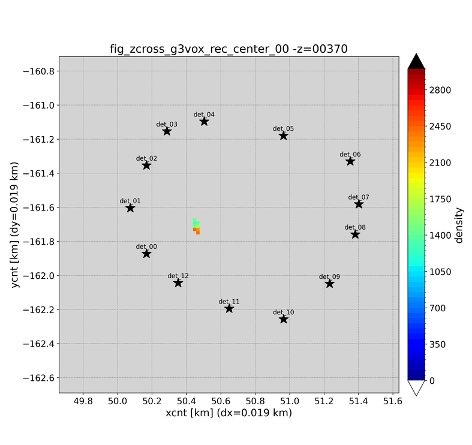

Output¶
MUONITH produces several types of output files: cross-section density maps, log files, and optional binary checkpoints.
Cross-Section Files¶
The primary output consists of 2D density maps at specified z-elevations. These represent horizontal slices through the reconstructed 3D density volume.
Z-Range Configuration¶
The output z-range is set in the Z_CROSS_SECTION section:
"Z_CROSS_SECTION": {
"min": 160.0, // Lowest z-elevation [m]
"max": 400.0, // Highest z-elevation [m]
"zstep": 40, // Z-step in meters (0 or omitted = use z_interval)
"output_binary": false // false = ASCII text (.tmp), true = binary (.tmpbin)
}
Each slice is output at an elevation within this range, stepped by zstep meters. If zstep is 0 or omitted, the voxel grid's z_interval is used as the step size. All slices for one field are written into a single file. output_binary selects the content format and the extension: false (default) writes ASCII text as <field>_zcross_all.tmp, true writes binary as <field>_zcross_all.tmpbin. Exactly one file is written per field.
auto_plot.json5 (generated by init_work_site.py)¶
scripts/init_work_site.py writes an auto_plot.json5 file in each site's working directory (e.g. depth001/auto_plot.json5, swp001/auto_plot.json5). The file drives scripts/auto_plot.py and controls which families of plots are produced and with what binning. Typical usage:
python3 ../../scripts/auto_plot.py --config auto_plot.json5
Hand-editing auto_plot.json5 is how you change fixed-bin settings, exclude specific outputs, or disable entire plot families (hist2d / g3vox / g2bg) for a site without touching the reconstruction JSON5. See auto_plot.py for the full option list.
Setting det_exec: true in auto_plot.json5 enables a fourth, binary-direct plot family: auto_plot.py scans det/arrdet_*.bin and checkpoint_*/det/arrdet_*.bin (in the working directory and under tmp/, where the sweep driver writes its checkpoint bundles) and runs plot_det_arrdet.py on each, reproducing the standard txty/g2bg figures without the tmp/*.tmp text exports. The built-in default is false: when the text exports are present, enabling it would produce the same figures twice. The swp001 auto_plot.json5 generated by init_work_site.py sets det_exec: true, because the generated swp001 prm_muonith.json5 disables the text exports (tf_out_txty_ascii / tf_out_g2bg_ascii false). Since PIPELINE_VERSION 7 the checkpoints also carry the group efficiencies, so the eff_* figures are produced on this path as well (checkpoints older than v7 cannot be read — regenerate them with the current code). The det section of auto_plot.json5 controls where the figures go and how they are drawn: out_dir (relative paths are anchored at the config's folder; the swp001 template sets "figs", so the figures land in the work dir's figs/; unset = plot_det_arrdet/ next to the binary) and n_jobs (drawing workers inside plot_det_arrdet.py: positive = that many, 1 = one by one, 0 = all CPU cores, negative = leave that many cores free; default -2).
Output Types¶
For each inversion configuration, the following cross-section sets are generated:
| Output | Content | Unit |
|---|---|---|
| Reconstruction density | Inverted density field \(\vec{\rho}'\) | kg/m³ |
| Delta prior | \(\vec{\rho}' - \vec{\rho}_0\) (change from prior) | kg/m³ |
| Difference from input | \(\vec{\rho}' - \vec{\rho}_{\text{true}}\) (error, synthetic tests only) | kg/m³ |
| Density uncertainty | \(\sqrt{\text{diag}(\mathbf{C}_{\rho'})}\) (posterior standard deviation) | kg/m³ |
File Format¶
Cross-section files contain (x, y, value) data on the voxel grid:
# Header information (grid dimensions, z-elevation, etc.)
x1 y1 density1
x2 y1 density2
...
ASCII cross-section files use the .tmp extension (e.g. g3vox_rec_center_00_zcross_all.tmp); binary ones use .tmpbin (e.g. g3vox_rec_center_00_zcross_all.tmpbin). The example above shows the ASCII layout (output_binary: false).
Analyze Errors and Output (Module 8)¶
When Analyze Errors (Module 8) runs, additional outputs are generated:
Leave-One-Out Results¶
For each detector in the array, Analyze Errors (Module 8) re-runs the inversion with that detector removed (leave-one-out). Each output file is named {name}_disable_NN_zcross_all.tmp, where {name} is the inversion run name and NN is the iteration index (00, 01, ...; iteration order, not necessarily detector ID order):
| Output | Description |
|---|---|
{name}_disable_NN |
Reconstruction with detector NN removed |
{name}_disable_NN_delta_prior |
Delta-prior for that leave-one-out configuration |
{name}_disable_NN_diff_from_all |
Difference from the all-detector reconstruction (written only when a reference reconstruction is provided) |
Error Components¶
| Component | Description |
|---|---|
| Statistical error | From the posterior covariance diagonal |
| Prior error | Difference between lower/upper prior reconstructions |
| Leave-one-out sensitivity | Maximum deviation when any single detector is removed |
| Combined error | Root-sum-square of all components |
Each error component is written as a cross-section file:
| File | Error component |
|---|---|
g3vox_stat_error_zcross_all.tmp |
Statistical |
g3vox_prior_error_zcross_all.tmp |
Prior |
g3vox_disabled_error_zcross_all.tmp |
Leave-one-out |
g3vox_mixed_error_zcross_all.tmp |
Combined |
The figure below shows three of these error maps for a synthetic 11-detector example. Columns are the error type — statistical (left), leave-one-out (center), and combined (right); rows are five elevation slices. The color scale is density error in kg/m³. Error is smallest where viewing directions cross densely (center of the array) and grows toward the sparsely-viewed edges.
{kind=link}
Log Files¶
Log files are written to the directory specified by LOG_FILE.path_log_dir (default: logs/).
| Level | Content |
|---|---|
trace |
Detailed execution flow, matrix sizes, timing |
debug |
Parameter values, intermediate results |
info |
Progress messages, module start/completion |
warn |
Non-critical issues (e.g., low muon counts) |
error |
Fatal errors |
Log levels are independently configurable for stdout, stderr, and file output.
Binary Checkpoints¶
Intermediate results can be saved for reuse via tf_save_* flags in PATH_LENGTH_PARAMETERS:
| Checkpoint | Flag | Description |
|---|---|---|
| Detector array (2D) | tf_save_arrdet_g2pil |
DetectorPanelArray after 2D ray tracing |
| Detector array (3D) | tf_save_arrdet_g3vox |
DetectorPanelArray after 3D ray tracing |
| Path-length matrices | path_vec_spmat_PL_bin |
Sparse matrices per detector |
| Observation matrix | tf_save_bin_obs_mat_dNdD |
dN/dD sensitivity matrix |
On subsequent runs, set the corresponding tf_load_* flag to true to skip the computation and load from the saved file.
Tip
When sweeping inversion parameters (sigma_rho, corr_length), save the Trace Path Lengths (Module 4) outputs and load them for each sweep iteration. Only Invert Density (Module 7) needs to be re-executed.
The observation matrix is additionally exported to a self-describing mat/ directory
(matrix binaries plus manifest.json) that an external tool can consume without the C++
code. See External Reconstruction.
Interpreting Results¶
Reconstruction Quality Indicators¶
- Delta prior near zero: The reconstruction is close to the prior — this may indicate insufficient data or too-strong regularization
- Large uncertainty: The density at that voxel is poorly constrained — consider adding more detectors or increasing exposure time
- Leave-one-out sensitivity: Voxels sensitive to a single detector suggest that more viewing angles are needed for robust reconstruction
Density Values¶
- Internal computations use kg/m³
- Typical rock density: 2000–2700 kg/m³
- Low-density anomalies (cavities, fractures): below 2000 kg/m³
- High-density anomalies (mineralization, magma): above 2700 kg/m³
Visualization¶
Cross-section files can be visualized with standard tools:
- Python: matplotlib (
pcolormesh,contourf) - GMT (Generic Mapping Tools):
gmt surface,gmt grdimage - ParaView: For 3D volume rendering from stacked cross-sections
Showa-shinzan reference reconstruction¶
The animated GIFs below show horizontal cross-sections sweeping through elevations for a Showa-shinzan reference case (work/showa/rec001/). Star markers indicate the 13 detector positions surrounding the lava dome.
| Input (ground truth) | Reconstruction (MAP) |
|---|---|
 |
{kind=link}
{kind=link}
The synthetic low-density anomaly embedded at the summit is recovered by the inversion. This is an advanced reference case, not the default first-run sample; the default runnable sample is tutorial in the Quick Start.